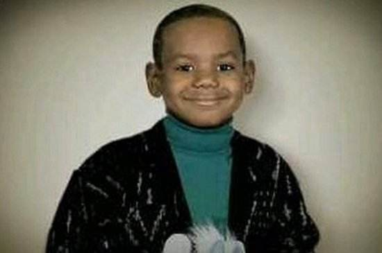
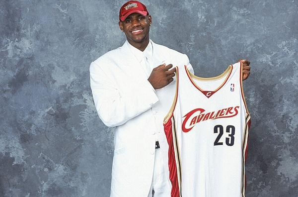
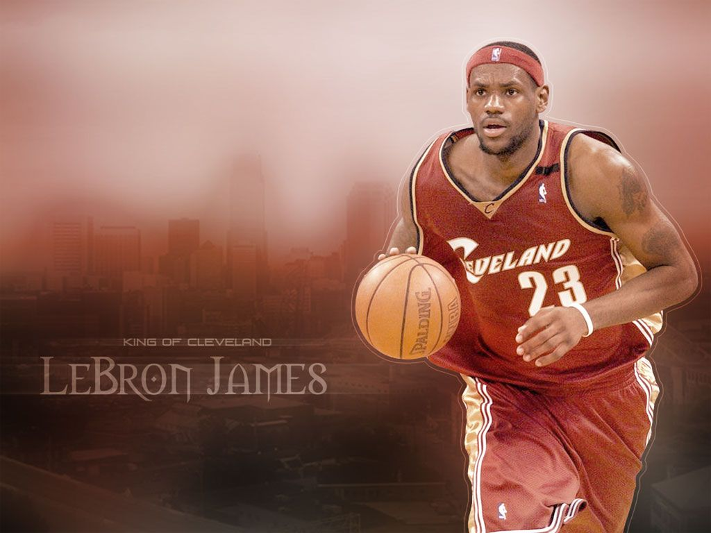

1984年，勒布朗·詹姆斯出生在美国俄亥俄州克里夫兰胡桃树大街的一栋房子里，
他的母亲格利亚·詹姆斯当时16岁，她从来没有透露过詹姆斯的生父。
詹姆斯出生后，和母亲一起住在外婆家。
那是俄亥俄州阿肯山胡桃木街一栋外婆租来的老房子里，那里是贫民区。
她们经常交不起房租。在詹姆斯三岁时圣诞节的清晨，
格利亚和男友埃迪给勒布朗买了一套篮球装置玩具。
这个晚上，勒布朗42岁的外婆弗雷达死于突发心脏病。
5岁到8岁的那几年，詹姆斯搬过12次家。
直到1995年，格利亚终于在斯普林山公寓租下一栋有两个卧室的房子。

在03年进入联盟，被誉为天择之子，加盟克利夫兰，从此承担起兴盛骑士的重任。
克利夫兰以重工制造业为核心发展经济，和临近的底律特一样，
在社会经济迅速发展的冲击下城市经济终于走向萧条，这个城市渐渐地为人们歧视，
从Eminem的MV《Beautiful》中可见一斑。
由于诸多原因，詹姆斯的到来，对于骑士、阿克伦、克利夫兰，以及这里的人民，有着非凡的意义，岁寒知松柏，患难见真情，这里的人们给了詹姆斯远胜于家的温暖，同时詹姆斯也成了他们心中的信仰。

03-10，骑士7年，
见证詹姆斯从人们给他设立的模版魔术师的影子中走出来，成为小皇帝，
再一步一步登上最高的舞台，君临天下。
10年的转会风波，詹姆斯的人气骤降到冰点。
有人说：那是爱之深恨之切的表现。有人说：骑士为詹姆斯付出了全部，这样走了，
给人感觉一个花季少女辛勤地持家，等到丈夫功成名就之后，满怀欣喜，等来的却是被分手。
但接下来的两个赛季，热火拿到两个总冠军，詹姆斯第一次捧起奥布莱杯，欣喜之情溢于言表。
15年，詹姆斯决定回家，实现自己诺言，经历坎坷两年，终于实现梦想。
